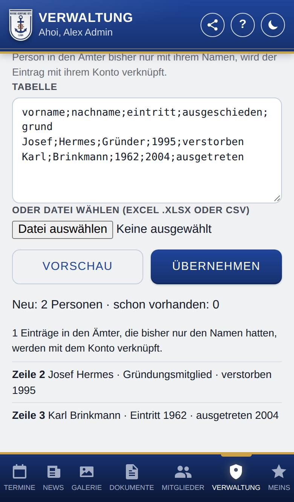

Ehemalige
Wer austritt, verstirbt oder sonst ausscheidet, muss nicht gelöscht werden. Als ehemalig eingetragen bleibt das Konto mit allen Daten erhalten: Punkte, Strafen, Anwesenheit, Dienstgrad mit Verlauf, Titel, Ämter, Geburtstag und Foto. Unter Ehemalige findest du alle diese Personen.
So öffnest du die Seite
Tippe unten auf Verwaltung und dann auf Ehemalige.
Was du hier siehst
- Zähler oben: wie viele ausgetreten, verstorben und sonst ausgeschieden sind.
- + Ehemalige Person anlegen: jemanden eintragen, der schon vor der App ausgeschieden ist (siehe Ehemalige Person anlegen). Dort geht es auch zum Import vieler auf einmal.
- Suchen …: filtert die Liste nach dem Namen.
- Filter und Sortierung: zunächst eingeklappt. Darin filterst du bei Alle Gründe nach dem Grund und sortierst nach Nachname, Vorname, Eintritt oder Austritt, mit Reihenfolge daneben. Ist ein Filter gesetzt, steht aktiv daneben.
- Die Liste: je Person der Name, darunter „Gründungsmitglied“, Eintritt und Ausscheiden, soweit eingetragen, und offene Strafen, wenn du sie siehst.
So gehst du vor
Jemanden als ehemalig eintragen
- Öffne in der Mitgliederliste die Seite der Person.
- Tippe unter den Kacheln auf Austritt (oder unter Konto und Rolle auf Als ehemalig eintragen …). Es öffnet sich das Fenster Austritt.
- Wähle den Grund des Ausscheidens: Ausgetreten, Verstorben oder Sonstiges.
- Trage, wenn bekannt, Ausgeschieden am (bei Verstorbenen Verstorben am) und den Eintritt ein, jeweils als TT.MM.JJJJ oder nur das Jahr. Ein schon eingetragener Eintritt steht dort bereits.
- Setze den Haken bei Gründungsmitglied, wenn es passt.
- Hat die Person laufende Ämter, steht darunter, welche mit dem Ausscheiden enden und mit welchem Jahr, z. B. „Mit dem Ausscheiden enden: Fahne (seit 2006) – Ende 2026.“
- Tippe auf Als ehemalig eintragen.
Eine ehemalige Person öffnen
- Tippe in der Liste auf die Person. Es öffnet sich ihre Seite wie bei aktiven Mitgliedern.
- ‹ Ehemalige führt zurück. Mit Wischen (oder ‹ und › oben rechts) blätterst du zur nächsten bzw. vorherigen Person; nach der letzten kommt wieder die erste.
Angaben ändern oder wieder aufnehmen
- Tippe auf der Seite der Person auf Eintritt oder Austritt, ändere Grund, Daten oder Gründungsmitglied und tippe auf Speichern.
- Zum Wiederaufnehmen (z. B. bei einem Wiedereintritt) klappe Konto und Rolle auf und tippe unter Ehemalig auf Wieder aufnehmen.
- Erzeuge danach unter Konto und Rolle ein neues Startpasswort, damit sie sich wieder anmelden kann.
Ehemalige aus einer Tabelle übernehmen
- Tippe auf + Ehemalige Person anlegen und dann oben auf Tabelle importieren (z. B. Chronik). ‹ Einzeln anlegen führt zurück zum Formular.
- Füge die Tabelle ins Feld Tabelle ein oder wähle bei Oder Datei wählen (Excel .xlsx oder CSV) eine Datei. Eine Zeile je Person, Spalten getrennt durch Semikolon oder Tabulator:
vorname;nachname;eintritt;ausgeschieden;grund. - Tippe auf Vorschau. Sie zeigt jede Zeile mit dem, was die App verstanden hat, und Fehler je Zeile.
- Hat keine Zeile einen Fehler, tippe auf Übernehmen.

Gut zu wissen
- Danach hat die Person keine Rolle mehr: Sie steht nicht mehr in der Mitgliederliste, nicht in der öffentlichen Liste der Mitglied, bekommt keine Benachrichtigungen, nimmt nicht an Umfragen teil und taucht bei den Geburtstage nicht mehr auf. Sie wird auf allen Geräten abgemeldet und kann sich nicht mehr anmelden.
- Sind noch Strafen offen, weist die App vorher darauf hin. Sie bleiben offen und stehen auch in der Liste der Ehemaligen.
- Laufende Ämter enden mit dem Ausscheiden, auch solche mit dem Haken Ehrung. Ende ist das Jahr von Ausgeschieden am; ist es leer, das aktuelle Jahr. Liegt das Ausscheiden vor dem Beginn einer Amtszeit, endet sie im Jahr ihres Beginns. Einzelne Jahre und schon beendete Amtszeiten bleiben, wie sie sind. Nichts wird gelöscht: Die Amtszeiten bleiben mit der Person im Zeitstrahl.
- Teilt die Person eine laufende Amtszeit mit anderen (z. B. Fahne), bekommt sie einen eigenen, beendeten Eintrag; die anderen bleiben im Amt.
- Ist ein Amt mit einem Titel verknüpft, verliert die Person diesen Titel mit dem Ausscheiden. Andere Titel behält sie.
- Änderst du später Ausgeschieden am, ziehen die beim Eintragen beendeten Amtszeiten mit: Sie enden dann mit dem neuen Jahr. Das gilt nicht für Amtszeiten, die inzwischen jemand unter Ämter von Hand geändert hat.
- Wieder aufnehmen öffnet beendete Amtszeiten nicht wieder. Hat die Person ein Amt weiter inne, trage unter Ämter eine neue Amtszeit ein oder entferne dort das Ende.
- Beim Wiederaufnehmen bekommt die Person ihre Rolle von vorher zurück, dazu ihre Zusatzrollen, soweit es sie noch gibt und du sie vergeben darfst. Ausnahmen bei den Rechten stellt nur ein Admin wieder her. Gibt es die Rolle nicht mehr, wird sie Mitglied.
- Konten von Admins tragen nur Admins als ehemalig ein. Das eigene Konto kannst du nicht als ehemalig eintragen.
- Import: eintritt und ausgeschieden als TT.MM.JJJJ, nur das Jahr oder leer; „Gründer“ als Eintritt trägt ein Gründungsmitglied ohne Datum ein. grund: ausgetreten (auch leer), verstorben oder sonstiges. Eine Kopfzeile mit genau diesen Spaltennamen ist erlaubt. Höchstens 500 Zeilen auf einmal.
- Für jede importierte Person entsteht ein Konto ohne Anmeldung, das gleich als ehemalig eingetragen ist. Wer schon ein Konto mit genau diesem Vor- und Nachnamen hat, wird übersprungen; ein zweiter Import legt also niemanden doppelt an. Zwei Personen mit gleichem Namen in der Tabelle sind ein Fehler: Mach sie unterscheidbar, z. B. mit „I“ und „II“ am Nachnamen.
- Steht eine importierte Person in den Ämter bisher nur mit ihrem Namen, verknüpft der Import diesen Eintrag mit ihrem neuen Konto, wenn der Name genau passt (Groß- und Kleinschreibung egal). Die Vorschau sagt vorher, wie viele Einträge verknüpft werden.
- Aktive und Ehemalige aus einer gemeinsamen Liste übernimmst du unter Mitglieder importieren.
Für Fortgeschrittene: In der WordPress-Version bleibt der Benutzer der Webseite bestehen, hat in der App aber keine Rolle mehr.